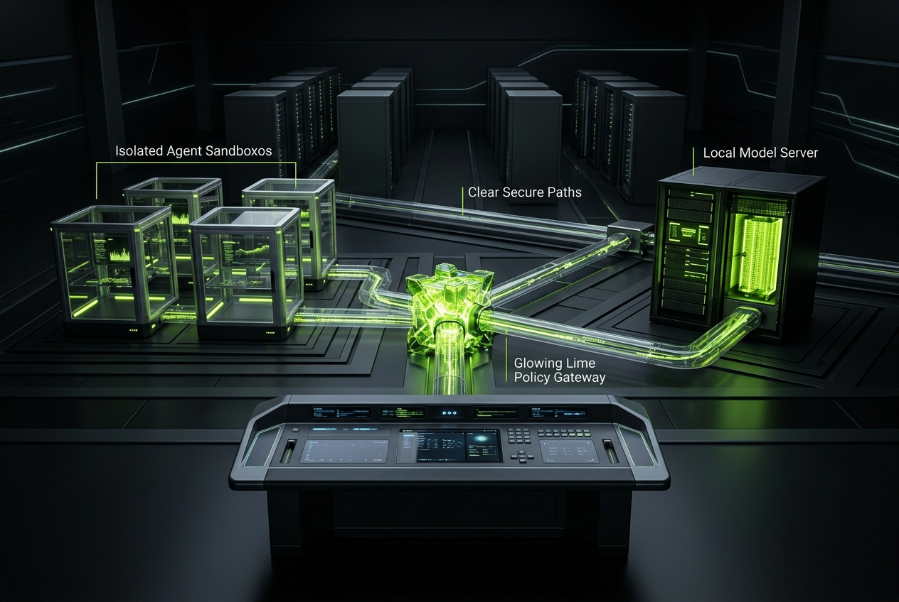
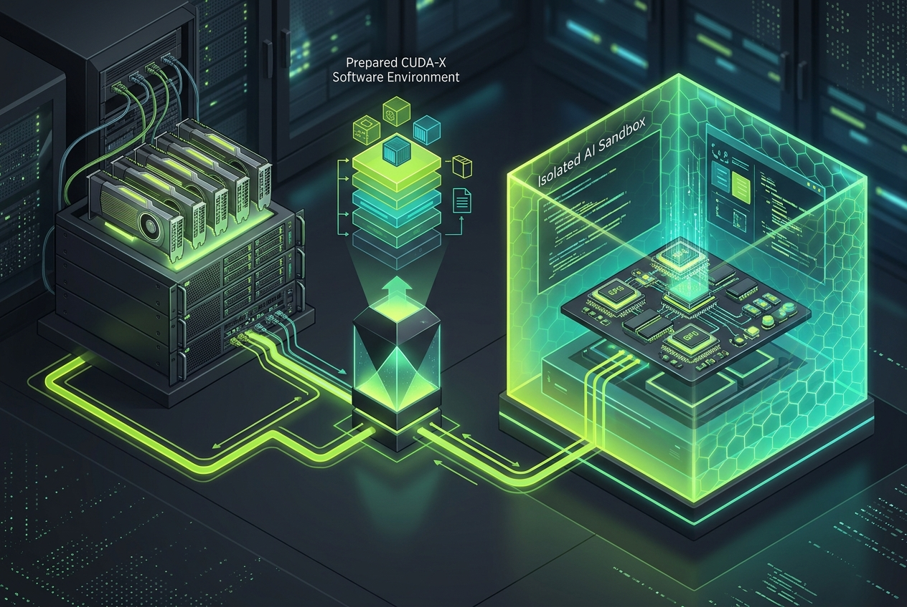
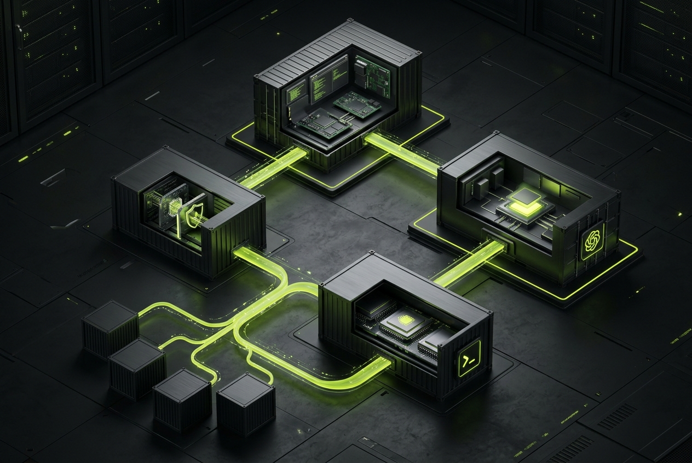
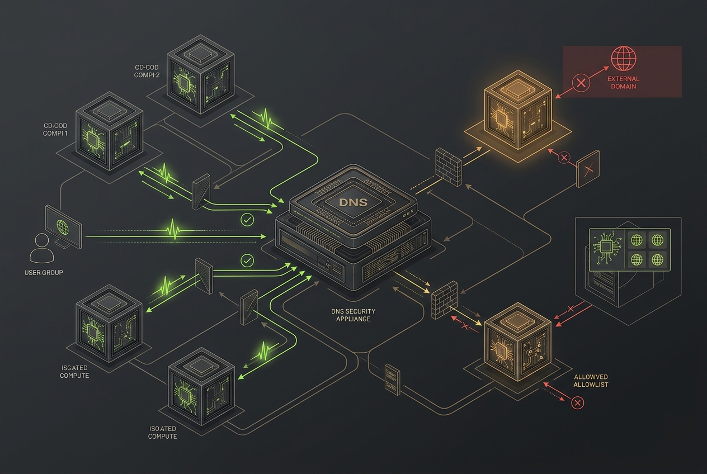

Nemotron local models
Validated NVIDIA Nemotron profiles can be delivered as independently managed model sandboxes, with lifecycle state, health checks, logs and controlled consumers.
Open source AI infrastructure
Run agents, local models and AI-enabled applications in isolated sandboxes. Give every workload only the tools, project data and network paths it needs. Route outbound traffic through a governed gateway and standard forward proxy, then see which destinations each sandbox attempts to reach, what is allowed or blocked, and why. When explicitly authorized, transparent proxy observation can expose otherwise direct traffic too — always visible, scoped and reversible.

BUILT FOR THE NEW LOCAL STACK
OpenShell sits at the core of the Nestbox design: a safe runtime developed by NVIDIA for controlled AI-agent execution. Nestbox surrounds it with a purpose-built control plane, policy, mounts, models, tools and observability.
Runtime and workflow examples are shown for the planned compatibility surface. Direct support depends on the selected sandbox template, agent pack and provider/API configuration.
PROJECT ORIGIN
Nestbox began during the Dev Community Day Hackathon in Berlin on 25 October 2026. The early project concept and website were accelerated with OpenAI credits. Thank you to OpenAI. Additional thanks to NVIDIA and Nous for a 20 US dollar free-credit voucher shared at the RTX Launch Event Berlin, which supported early experimentation and evaluation. The first project concept, product-language drafts and this website were developed with assistance from GPT-5.6 Terra; the project direction and final decisions remain the responsibility of the maintainer.
Buy me a Red Bull LinkedIn profile ↗LOCAL AI · NVIDIA ECOSYSTEM CONTEXT
Nestbox is being designed for NVIDIA DGX Spark-class systems, the GB10 Grace Blackwell platform and other local GPU workstations where large unified memory makes private model evaluation and agent workflows practical. The goal is not to replace NVIDIA cloud resources, NIM microservices, NeMo tooling or AI Enterprise workflows — it is to offer an open-source, self-hosted control plane around the workloads you choose to run.
Validated NVIDIA Nemotron profiles can be delivered as independently managed model sandboxes, with lifecycle state, health checks, logs and controlled consumers.
OpenShell provides the safe execution foundation in the design. Nestbox adds mount grants, policy assignments, isolated sandboxes and egress observability around AI-enabled workloads.
Begin with NVIDIA cloud resources, a provider-neutral VM or local GPU hardware. Keep the same policy-first deployment model as workloads move closer to your own infrastructure.
NVIDIA, DGX Spark, GB10 Grace Blackwell, NIM, NeMo, OpenShell, NemoClaw and Nemotron are trademarks or product names of NVIDIA Corporation. Nestbox is an independent open-source project and is not affiliated with or endorsed by NVIDIA.
FUTURE DIRECTION · FROM HOME LAB TO TEAMS
I am building Nestbox in the open and have early foundations in place. The next milestone is repeatable validation: make the core workflows reliable, run the first tests, learn from real feedback and announce a wider testing opportunity only when the project is ready for useful evaluation.
If the project proves useful and earns sustained adoption, the direction could expand from one home-lab host or single VM into a centrally managed fleet: multiple VMs, gateways, sandboxes and local-model runtimes operated from one Control Center.
Follow the development on GitHub ↗Single-host recipes, sandbox concepts, policy and observability foundations.
Announce evaluation only after repeatable core tests are ready.
Explore multi-VM, multi-gateway and Kubernetes-compatible operation if demand justifies it.
PLANNED V1 · EXISTING GPU ENVIRONMENTS
Many teams already operate NVIDIA GPUs in a private datacenter, lab or cloud environment. Nestbox is planned to make that existing investment easier to use for controlled agent workloads: select a GPU-capable sandbox template and prepare the runtime configuration required by your approved CUDA-X software stack.
That can include CUDA runtime compatibility, GPU device access, container image selection and workload-specific configuration for tools such as CUDA-X libraries, NIM microservices, TensorRT-LLM, RAPIDS or other approved components already present in your environment.
What is NVIDIA CUDA-X? ↗Nestbox will not replace NVIDIA software, drivers, licensing or vendor support. The goal is to make approved local or cloud GPU capabilities easier to attach to a governed sandbox, with explicit policy and observability around the workload.

ONE PLATFORM · CLEAR BOUNDARIES
React Admin provides the local control experience. FastAPI exposes a versioned control API. A gateway governs routes. OpenShell mediates execution. Every agent, model or OCI workload runs in its own sandbox.
See what each boundary protects →
PLANNED · LIVE TRAFFIC CONSOLE
The planned Admin Center starts with a firewall-style timeline for each sandbox: incoming and outgoing protocol events, source, destination, port, policy decision and correlation ID. Select a suspicious event to draft a block rule, review the diff and apply it explicitly.
Default deny is available too. For a strongly isolated sandbox, start with all network traffic blocked and allowlist only the exact hosts, protocols, ports and tools that the workload needs.

PLANNED · DNS CONTROL
Nestbox will provide an appliance DNS service for managed sandboxes. The Admin Center records queries with the sandbox, name, resolver and decision. Blacklist a hostname or domain when it does not belong; for a hardened sandbox, block all DNS by default and allowlist only required names.
Every DNS policy change is versioned, reviewable and reversible. A blocked name means that sandbox cannot resolve it in the future until policy permits it again.
PLANNED · RULE FROM EVENT
In the Live Traffic Console, an operator will be able to select an unusual DNS query or network connection and create a prefilled policy-rule draft. The draft is scoped to the selected sandbox or policy, reviewed in the editor, then explicitly applied — never silently enforced from a click.
RULE DRAFT
sandbox: research-01destination: telemetry.example.netprotocol: DNSaction: blockPLANNED · EGRESS MODES
Network visibility is a deliberate policy decision, not a hidden default. Operators choose a standard proxy path or explicitly enable transparent proxy observation for a narrowly scoped sandbox.
DEFAULT MODE
Approved outbound traffic follows the gateway and proxy path. Operators can see incoming and outgoing protocol events, source, destination, port, policy decision, route, status and latency without enabling TLS decryption.
EXPLICIT OPT-IN
For a sandbox that needs deeper network observability, an operator can explicitly enable transparent interception. The planned Control Center issues a sandbox-scoped trust CA and injects it only when the operator approves this mode.
Privacy and control by design: transparent TLS inspection is disabled by default, must be visibly enabled per policy, and is intended only for workloads and environments where the operator is authorized to inspect that traffic. The Control Center will show the active mode, assigned trust CA and audit history for every affected sandbox.
THE GOVERNED PATH
Secrets are not embedded in images or ordinary sandbox files. The planned control plane manages scoped delivery, mount grants and visible policy decisions after first boot.
DEPLOY ANYWHERE
Start with a local seed bundle today. Configure hostname, networking, DNS, NTP, trusted CA and proxy behavior. Later, choose a signed ISO build, Brev launch, cloud VM, Proxmox or local workstation target from the same flow.
WORKING NOW · LOCAL GENERATOR
Render a lightweight recipe locally in your browser. It never asks for an API key, and the generated artifact contains no credentials.
Visual disclosure. Product visuals on this page are AI-generated concept imagery created for Nestbox with Meta Muse Image. They illustrate the planned experience and are not screenshots of a production system.